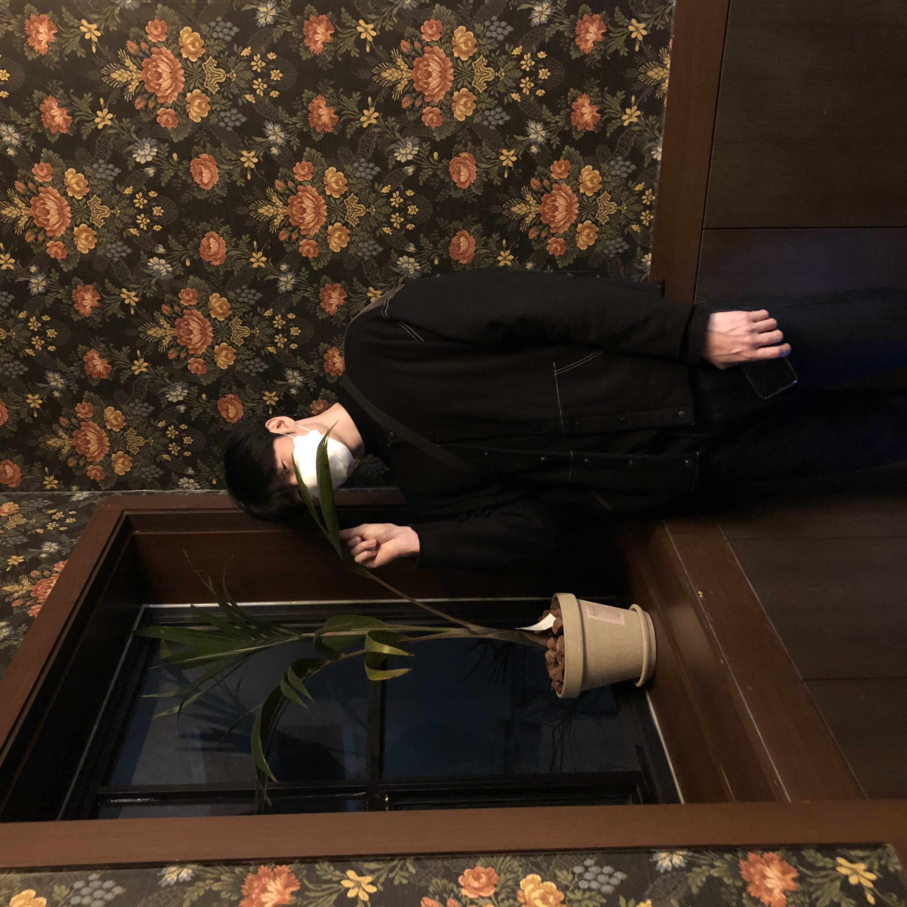
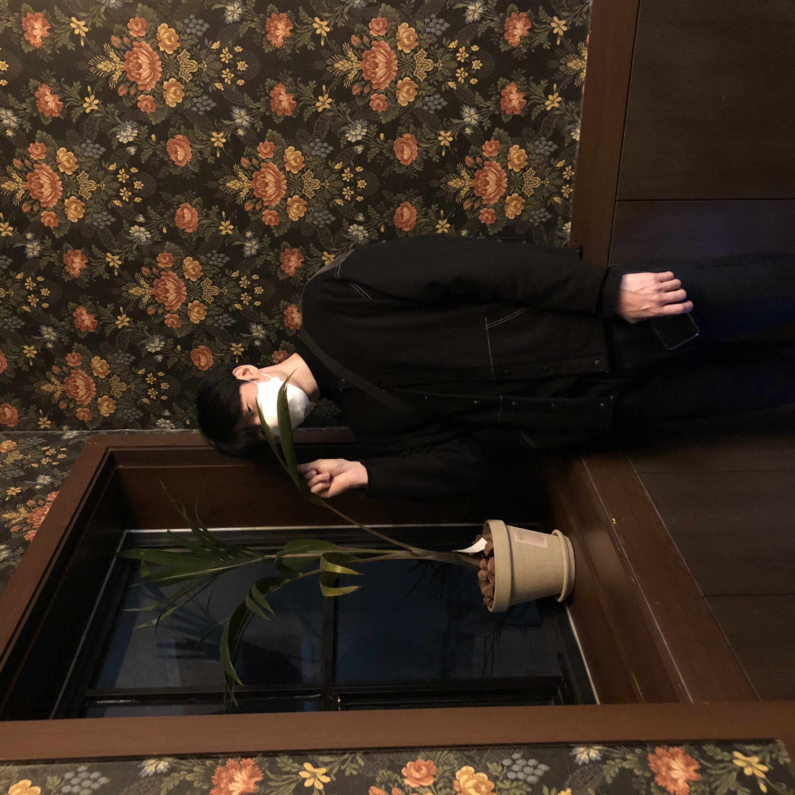

Welcome to Hoseok's blog!!

201701359 이호석의 개인적인 블로그 입니다.
좋아하는 가수와 음악을 소개하기 위해 만들어 졌습니다.
Github
 Hoseok's Blog
Hoseok's Blog

201701359 이호석의 개인적인 블로그 입니다.
좋아하는 가수와 음악을 소개하기 위해 만들어 졌습니다.
Github
블로그 주인장 소개
좋아하는 가수와 그들의 음악에 대해서 정리한 글을 올립니다.